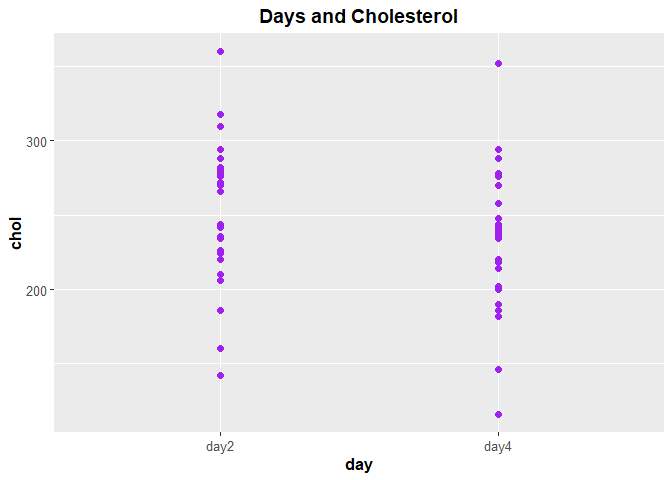

library(reshape)
library(reshape2)##
## Attaching package: 'reshape2'## The following objects are masked from 'package:reshape':
##
## colsplit, melt, recastlibrary(coin)## Loading required package: survivallibrary(tidyverse)## ── Attaching packages
## ───────────────────────────────────────
## tidyverse 1.3.2 ──## ✔ ggplot2 3.3.6 ✔ purrr 0.3.5
## ✔ tibble 3.1.8 ✔ dplyr 1.0.10
## ✔ tidyr 1.2.1 ✔ stringr 1.4.1
## ✔ readr 2.1.3 ✔ forcats 0.5.2
## ── Conflicts ────────────────────────────────────────── tidyverse_conflicts() ──
## ✖ tidyr::expand() masks reshape::expand()
## ✖ dplyr::filter() masks stats::filter()
## ✖ dplyr::lag() masks stats::lag()
## ✖ dplyr::rename() masks reshape::rename()packageVersion("dplyr")## [1] '1.0.10'require(Rmisc)## Loading required package: Rmisc
## Loading required package: lattice
## Loading required package: plyr
## ------------------------------------------------------------------------------
## You have loaded plyr after dplyr - this is likely to cause problems.
## If you need functions from both plyr and dplyr, please load plyr first, then dplyr:
## library(plyr); library(dplyr)
## ------------------------------------------------------------------------------
##
## Attaching package: 'plyr'
##
## The following objects are masked from 'package:dplyr':
##
## arrange, count, desc, failwith, id, mutate, rename, summarise,
## summarize
##
## The following object is masked from 'package:purrr':
##
## compact
##
## The following objects are masked from 'package:reshape':
##
## rename, round_anyrequire(BSDA)## Loading required package: BSDA
##
## Attaching package: 'BSDA'
##
## The following object is masked from 'package:datasets':
##
## Orangerequire(simpleboot)## Loading required package: simpleboot
## Simple Bootstrap Routines (1.1-7)chol <- read.csv('cholestg.csv')
chol## patient group day cholest
## 1 1 1 2 270
## 2 2 1 2 236
## 3 3 1 2 210
## 4 4 1 2 142
## 5 5 1 2 280
## 6 6 1 2 272
## 7 7 1 2 160
## 8 8 1 2 220
## 9 9 1 2 226
## 10 10 1 2 242
## 11 11 1 2 186
## 12 12 1 2 266
## 13 13 1 2 206
## 14 14 1 2 318
## 15 15 1 2 294
## 16 16 1 2 282
## 17 17 1 2 234
## 18 18 1 2 224
## 19 19 1 2 276
## 20 20 1 2 282
## 21 21 1 2 360
## 22 22 1 2 310
## 23 23 1 2 280
## 24 24 1 2 278
## 25 25 1 2 288
## 26 26 1 2 288
## 27 27 1 2 244
## 28 28 1 2 236
## 29 1 1 4 218
## 30 2 1 4 234
## 31 3 1 4 214
## 32 4 1 4 116
## 33 5 1 4 200
## 34 6 1 4 276
## 35 7 1 4 146
## 36 8 1 4 182
## 37 9 1 4 238
## 38 10 1 4 288
## 39 11 1 4 190
## 40 12 1 4 236
## 41 13 1 4 244
## 42 14 1 4 258
## 43 15 1 4 240
## 44 16 1 4 294
## 45 17 1 4 220
## 46 18 1 4 200
## 47 19 1 4 220
## 48 20 1 4 186
## 49 21 1 4 352
## 50 22 1 4 202
## 51 23 1 4 218
## 52 24 1 4 248
## 53 25 1 4 278
## 54 26 1 4 248
## 55 27 1 4 270
## 56 28 1 4 242
## 57 1 1 14 156
## 58 2 1 14 NA
## 59 3 1 14 242
## 60 4 1 14 NA
## 61 5 1 14 NA
## 62 6 1 14 256
## 63 7 1 14 142
## 64 8 1 14 216
## 65 9 1 14 248
## 66 10 1 14 NA
## 67 11 1 14 168
## 68 12 1 14 236
## 69 13 1 14 NA
## 70 14 1 14 200
## 71 15 1 14 264
## 72 16 1 14 NA
## 73 17 1 14 264
## 74 18 1 14 NA
## 75 19 1 14 188
## 76 20 1 14 182
## 77 21 1 14 294
## 78 22 1 14 214
## 79 23 1 14 NA
## 80 24 1 14 198
## 81 25 1 14 NA
## 82 26 1 14 256
## 83 27 1 14 280
## 84 28 1 14 204
## 85 29 2 NA 196
## 86 30 2 NA 232
## 87 31 2 NA 200
## 88 32 2 NA 242
## 89 33 2 NA 206
## 90 34 2 NA 178
## 91 35 2 NA 184
## 92 36 2 NA 198
## 93 37 2 NA 160
## 94 38 2 NA 182
## 95 39 2 NA 182
## 96 40 2 NA 198
## 97 41 2 NA 182
## 98 42 2 NA 238
## 99 43 2 NA 198
## 100 44 2 NA 188
## 101 45 2 NA 166
## 102 46 2 NA 204
## 103 47 2 NA 182
## 104 48 2 NA 178
## 105 49 2 NA 212
## 106 50 2 NA 164
## 107 51 2 NA 230
## 108 52 2 NA 186
## 109 53 2 NA 162
## 110 54 2 NA 182
## 111 55 2 NA 218
## 112 56 2 NA 170
## 113 57 2 NA 200
## 114 58 2 NA 176chol_tibble <-
as_tibble(chol) %>%
mutate_at(c('group', 'day'), as.factor) %>%
mutate_at(c('patient'), as.character)
chol_tibble## # A tibble: 114 × 4
## patient group day cholest
## <chr> <fct> <fct> <int>
## 1 1 1 2 270
## 2 2 1 2 236
## 3 3 1 2 210
## 4 4 1 2 142
## 5 5 1 2 280
## 6 6 1 2 272
## 7 7 1 2 160
## 8 8 1 2 220
## 9 9 1 2 226
## 10 10 1 2 242
## # … with 104 more rowschol_wide <-
chol_tibble %>%
pivot_wider(names_from = "day", values_from = "cholest") %>%
dplyr::rename("day2" = "2", "day4" = "4") %>%
select(-'14', -"NA") %>%
na.omit()
chol_wide## # A tibble: 28 × 4
## patient group day2 day4
## <chr> <fct> <int> <int>
## 1 1 1 270 218
## 2 2 1 236 234
## 3 3 1 210 214
## 4 4 1 142 116
## 5 5 1 280 200
## 6 6 1 272 276
## 7 7 1 160 146
## 8 8 1 220 182
## 9 9 1 226 238
## 10 10 1 242 288
## # … with 18 more rowschol_long <-
chol_wide %>%
select(-'patient') %>%
pivot_longer(!group, names_to = "day", values_to = "chol")
chol_long## # A tibble: 56 × 3
## group day chol
## <fct> <chr> <int>
## 1 1 day2 270
## 2 1 day4 218
## 3 1 day2 236
## 4 1 day4 234
## 5 1 day2 210
## 6 1 day4 214
## 7 1 day2 142
## 8 1 day4 116
## 9 1 day2 280
## 10 1 day4 200
## # … with 46 more rowsggplot(chol_long, aes(x = day, y = chol)) +
geom_point(color = "purple", size = 2) +
ggtitle("Days and Cholesterol") +
theme(axis.title.x = element_text(face="bold", size = 12),
axis.title.y = element_text(face="bold", size = 12),
axis.text.y = element_text(size = 10),
axis.text.x = element_text(size = 10),
legend.text =element_text(size = 10),
legend.title = element_text(size = 10, face = "bold"),
plot.title = element_text(hjust = 0.5, face = "bold", size = 14))